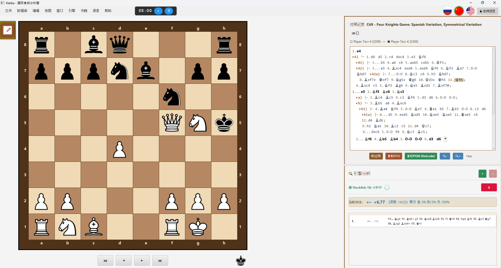
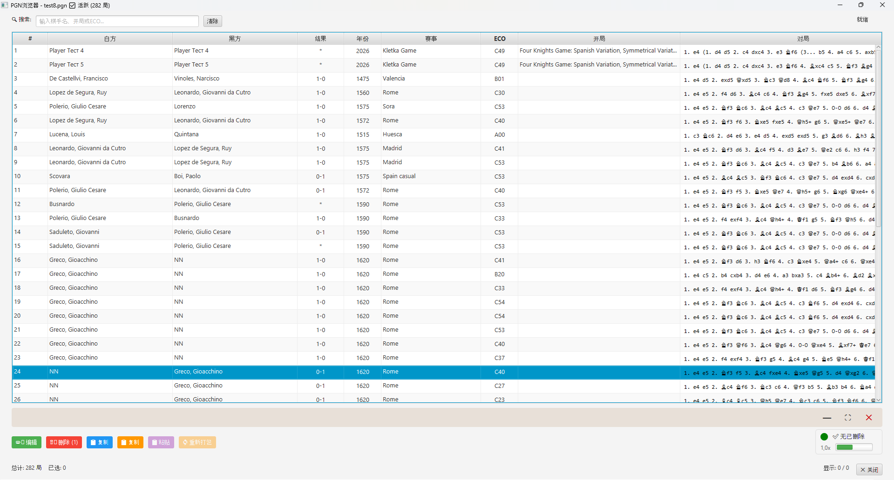
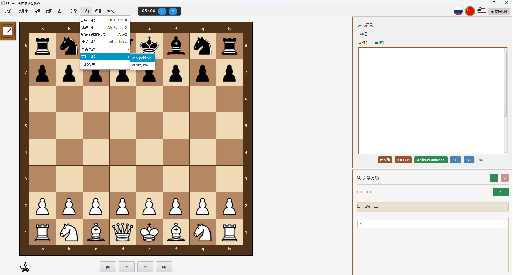
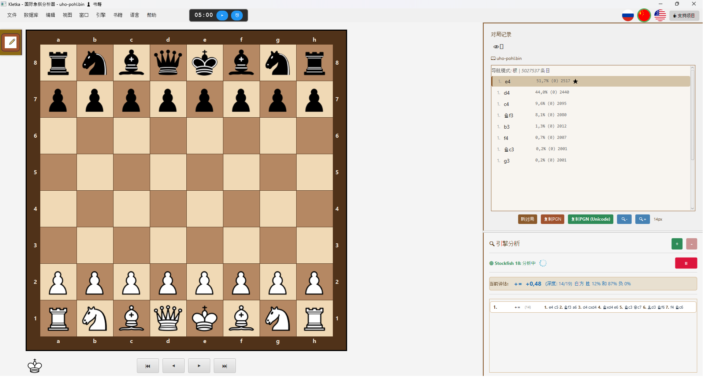

♟️ Kletka — 跨平台国际象棋分析工具


官方网站： https://andreykhrypach.github.io/Kletka/
Kletka 是一款跨平台国际象棋分析工具，支持 PGN 文件、变着、注释和 Stockfish 引擎。它具有现代可定制的界面，适用于 Windows、Linux 和 macOS。
📝 更新日志
详细更改历史请参阅 CHANGELOG.md。
🚀 功能特点
- 📁 打开、编辑和保存 PGN 文件
- 🧩 完整支持变着和注释
- 📚 Polyglot 开局库 — 加载、浏览和 编辑 开局变着
- 📤 将变例树导出为 Polyglot 开局库 — 保存个人棋路
- 🔍 使用 Stockfish (UCI 引擎) 进行局面分析
- 🎨 可定制的棋盘主题
- 📋 复制局面 为 FEN + ASCII 格式 (Ctrl+Shift+P)
- 🌍 多语言支持：英语、俄语、中文
- 🖥️ 跨平台：Windows、Linux、macOS
📺 视频教程
我们在 YouTube 频道上的分步指南：
更多教程即将推出 — Windows、Linux、macOS。
📚 开局库 (Polyglot)
Kletka 支持 Polyglot 开局库 (.bin 文件)，让您可以交互式地探索和学习国际象棋开局 — 也可以创建您自己的棋路。
如何使用开局库：
- 进入 书籍 → 加载书籍
- 选择 Polyglot 书籍文件 (
.bin) - 使用键盘浏览变着：
- ↑ / ↓ — 在变着之间移动
- → / Enter — 选择变着
- ← — 返回上一位置
如何编辑开局库：
Kletka 允许您直接将走法添加到已加载的开局库中：
- 在棋盘上走一步 — 它会自动添加到开局库
- 按 Alt+Z — 撤销最后添加的走法
- 书籍 → 保存书籍 (Ctrl+Shift+S) — 将更改应用到
.bin文件 - 书籍 → 卸载书籍 (Ctrl+Shift+C) — 卸载开局库
将变例树导出为 Polyglot 开局库：
您可以将当前分析树导出为 Polyglot 开局库：
- 分析或摆好一个带变着的局面
- 进入 书籍 → 导出为 Polyglot 开局库…
- 选择文件夹和文件名 — 开局库以
.bin格式创建
树中的所有走法（主线 + 所有变着）都会进入开局库。转置和重复自动去重。
生成的开局库可以重新加载到 Kletka，也可以在 Stockfish、Leela、ChessBase、Scid、Arena 等兼容软件中使用。
书籍的系统要求
Kletka 的开局书功能需要以下环境：
- Java 17 LTS（推荐使用 Liberica Full JDK）
- JVM 参数（通过启动器运行时自动应用）：
--add-opens java.base/sun.nio.ch=ALL-UNNAMED
--add-opens java.base/sun.misc=ALL-UNNAMED注意： 如果您从命令行运行 Kletka，请使用：
java --add-opens java.base/sun.nio.ch=ALL-UNNAMED \
--add-opens java.base/sun.misc=ALL-UNNAMED \
-jar Kletka.jar这些参数对于使用内存映射文件进行快速 Polyglot 开局库操作是必需的。
🔧 技术细节：内存映射文件
Kletka 使用 内存映射文件 (MappedByteBuffer) 实现极快的 Polyglot 开局库操作，即使在 HDD 上也是如此。
重要提示： 只要存在引用，内存映射字节缓冲区就不会被 JVM 垃圾回收器释放。为了让您在 Kletka 运行时能够删除、移动或替换开局库文件，应用程序会显式调用：
sun.misc.Unsafe.invokeCleaner(mappedByteBuffer);这会立即释放操作系统级别的文件锁定。
这对您意味着什么：
- ✅ 卸载开局库后可以安全地删除或移动
.bin文件 - ✅ 可以将开局库文件替换为新文件
- ✅ 在 Windows 上不会再出现"文件被另一个进程占用"的错误
Linux：已知问题
在 Debian Trixie / Ubuntu 24.04+ 上使用 Wayland 时，对话框可能无法获得焦点（键盘可以工作，但鼠标无法工作）。这是 JavaFX 17 + GTK 3 + Wayland 的已知 bug。
解决方案： 已在 Kletka 中包含——应用程序启动时带有 -Djdk.gtk.version=2 标志，通过 XWayland 使用 GTK 2。
推荐书籍：
为获得最佳效果，我们推荐使用 uho-pohl.bin 开局库，其中包含大量高质量的开局变着。
如何获取 Polyglot 书籍：
您可以从官方 Polyglot 书籍仓库下载免费的开局库：🔗 Polyglot Books Repository
其他热门来源：
- UHO-Pohl openings — 高质量开局数据库
- ChessTempo's Polyglot books
- 使用 Polyglot 格式创建自己的书籍
📋 复制局面 (FEN + ASCII)
您可以将当前局面以方便的格式复制到剪贴板 — FEN 加上 ASCII 图表：
- 菜单：编辑 → 复制局面
- 快捷键：Ctrl+Shift+P
这适用于：
- 在聊天、论坛或 issue 跟踪器中分享局面
- 与 AI 助手一起分析局面
- 在文本文件中记录局面
输出包含第一行的 FEN 和下方的 ASCII 图表，包裹在 Markdown 代码块中以便粘贴。
🐛 macOS 上的已知问题
拖放：棋子被"抓角"
症状：
- 棋子视觉上被抓角，而不是中心。
- 要完成走子，需要将鼠标拖到目标格子的角落。
- 放下后，光标可能会消失，直到鼠标进入菜单区域。
原因： JavaFX 已知 bug JDK-8333919 — 在 macOS 上忽略 dragViewOffsetX/Y。
修复： 已在 JavaFX 23 中修复（需要 JDK 21+）。Kletka 当前使用 Java 17 + JavaFX 17。
解决方法：
- 使用 click-to-move（点击棋子 → 点击目标格）代替拖放。
- 或者等待 Kletka 迁移到 JDK 25 + JavaFX 25（计划在未来版本中）。
状态： 在 issue #XXX 中跟踪。将在迁移到新堆栈时修复。
🖥️ 截图
快速预览
 |
 |
| 主界面 | PGN 浏览器 |
 |
 |
| 打开 Polyglot 开局库 | 已加载的 Polyglot 开局库 |
完整尺寸
点击图片即可在新标签页中打开完整尺寸。
📦 安装
Windows
从 Releases 页面下载 Kletka.exe 并运行安装程序。
macOS
下载 Kletka.dmg，打开并将 Kletka.app 拖到 Applications 文件夹。
Linux (Debian/Ubuntu)
sudo dpkg -i kletka*.deb🛠️ 从源码构建
环境要求
- Java 17 (推荐 Liberica Full JDK) — 从 BellSoft 下载
- Maven — 通过
brew install maven(macOS) 或sudo apt install maven(Linux) 安装
开发时的重要 JVM 参数
在 IDE 中运行时，请添加以下 VM 选项：
--add-opens java.base/sun.nio.ch=ALL-UNNAMED
--add-opens java.base/sun.misc=ALL-UNNAMED这可以确保在开发期间完全支持 Polyglot 书籍功能。
git clone https://github.com/AndreyKhrypach/Kletka.git
cd Kletka
mvn clean package特定平台构建
# Windows
mvn clean package -P windows
# Linux
mvn clean package -P linux
# macOS
mvn clean package -P mac🧠 配置 Stockfish
Kletka 使用 Stockfish UCI 引擎进行分析。您需要单独安装它。
Windows
- 从官方网站下载 Stockfish：https://stockfishchess.org/download/
- 解压归档文件
- 在 Kletka 中，进入 引擎 → 配置引擎 并选择
stockfish.exe文件
Linux (Debian/Ubuntu)
sudo apt install stockfish然后在 Kletka 中，进入 引擎 → 配置引擎 并选择 stockfish 二进制文件。
macOS
brew install stockfish然后在 Kletka 中，进入 引擎 → 配置引擎 并选择 stockfish 二进制文件。
📄 许可证
本项目采用 GNU General Public License v3.0 许可证。详见 LICENSE。
👨💻 作者
Andrey Khrypach
⭐ 支持
如果您喜欢这个项目，请在 GitHub 上给它一个星标！